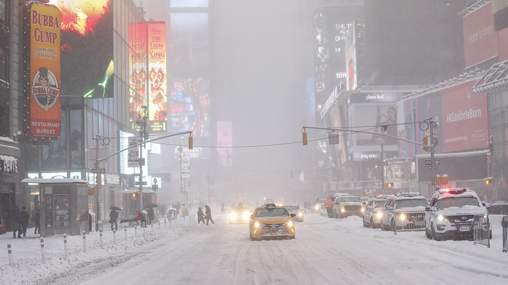

This page is to represent the work related to assignments for course Social Data Analysis and Visualization.
These exercises has been performed by DTU students:
This page is to represent the work related to assignments for course Social Data Analysis and Visualization.
These exercises has been performed by DTU students:
Here we have a small introduction video, that shows the idea behind of data analysis.
As explained in the video above, the following page will look into vehicle collisions in NYC. Additionally, we will try to explore where, how and why collisions happen.
One of our hypothesis is that when; the weather in NYC is bad (e.g. Snowy), there are more collisions. We will investigate if this actually is true, or not. Additionally, we want to investigate if there is any particular places in NYC are affected by bad weather compared to others.
Our main dataset is the NYPD Motor Vehicle Collisions. It contains records for every reported incident in the NYC area. Records are available from July 2012 till today. For each record there is also specified, where the collision took place, the cause of the collision, injuries, fatalities and more.
The dataset consists of more than;
The secondary dataset used is an extraction of weather conditions for the NYC area. This was pulled from Weather Underground using their csv service for hourly updates. For each hour, there are measurements of the temperature, visibility, windspeed as well as the overall weather conditions such as Rain, Snow, Clear etc. You can see our scrape from this service here.
This means that we have more than;
If you want to know, how we extracted all of the information from the two datasets. You can take a look backstage, in our explainer notebook.
NYC is a big city. A lot of traffic means a high chance for a collision to occur. Over 500 incidents are reported everyday. Therefore, we are providing an opportunity for you to discover the amount of vehicle collisions that has happened throughout the city in the period 2012-2015. See if you can find the safer commute. Go discover!
The size of each point indicates the accumulated amount of incidents that have happened for that intersection. The color red shows if there is any fatalities. Click on a point to get the numeric values.
Note that all intersections with less that 10 collisions and without fatalities have been omitted to increase performance.
This is all good. Looking at the worst offenders regarding the number of collisions, can we find out why there are worse than the others? Is there any underlying reason for this?
Let's begin by locating the top 10 intersections with the most collisions (Click a bar to view the intersections).
Title
Location: 100
Collisions:
Click to view
By hovering over each bar in the top 10 bar chart. We can find that the intersection Tillary Street / Flatbush Avenue Extension is the most dangerous intesection - by some margin - based on the 585 collisions happening.
For now, we can only guess, but clicking on the Tillary Street / Flatbush Avenue Extension bar, or looking below one could assume that the intersection is the perfect storm. The intersection is right before a highway access/exit ramp and extends into Manhattan by the Manhattan Bridge.


What we see is in the top 10. Is that most of the intersections have a few things in common; they are next to a highway access/exit ramp or one block from one.
This means that there are a right thouht put of cars, every day. Resulting in the high amount of car collisions.
We all assume that weather has a big impact on the traffic anywhere. Collisions are far more likely to happen in bad weather. So what is bad weather really? Is there any condition that is whose than others? And if so can we found out which so you can be more aware in traffic during one of these?
By combining the Motor Vehicle Collisions dataset with weather data from Weather Underground we are able to find out which weather condition on average produces the most collisions per hour. The data data has been normalized with the most common weather condition, Mostly Cloudy.
Title
Value: %
From the visualization we see a clear uptick in the collision frequency rainy and snowy conditions. Up to 60%, more collisions compared to Mostly Cloudy conditions. In completely Clear weather seems to hover around 40% less. It does however also raises some questions. Why are the conditions Blowing Snow and Heavy Snow so far down the list?
In early 2015 and 2016, NYC experienced two blizzards. In both cases, NYPD issued Travel Bans meaning that only emergency vehicles were allowed on the roads. This could be a tell in why we in the very bad weather we do not see the uptick in collision frequency in very bad weather.
At 11pm tonight, streets will only be available to emergency vehicles. #SafeNYC
— NYPD NEWS (@NYPDnews) January 26, 2015
After 2:30 p.m and you're on the road, we will arrest you @NYPDChiefofDept says
— NYPD NEWS (@NYPDnews) January 23, 2016
Okay, now that we have confirmed that the frequency of collisions is higher for same conditions relative to Mostly Cloudy. Can we find any causes in the Motor Vehicle Collisions dataset that might have been affected by the weather conditions?
Title
Amount:
As it is clear in the chart above. Accidents happening due to a slippery pavement, were as predicted indeed more frequent at light rain and snow. This shows that some accidents are sensitive to the weather. However this was the general data. There might be more information hidden here. For instance, is there some peticular intersections in NYC that are overly sensitive to this condition?
If we look at the slippery pavement cause for collisions. We can finde som interesting information. Looking at the frequency of accidents, we found perticular sensitive intersection.
As we see in the above heatmap, the spead is very broad. This is infact very similar to what the overall insident spread. However looking a the intersections, we can find some interiesting discoveries.
As shown above we have some intersections, that are perticular prone to accidents, with slippery pavements.
But why do people have accidents here? Let's take a look at the intersections thought the wonders of Street view:

As we can see on the image above. The top intersection is just by the graveyard at the church of St. Andrew. This can be no of coincidence!
As it should be visible from the image, this intersection is down hill, and with a sharp turn. We belive that this is why there are so many accidents here. Lokking further up the road, it is clear that the city counsil have tried to take some actions to increase the safety. However, this seems not to be sufficient. We would recoment that the speed limit was lowered.
The next intersection one the list, is located in Bronx, not Staten Island. Here again the oncomming trafic is lead down a steep hill. Leading onto a small but significant turn. Here the driver not be able to see the light before hand, as of this turn. And when visible he might be unable to stop as of the slope. Additionally we can see that the pavement here is made of concrete, meaning that it is going to be extra slippery even in light rain or snow.